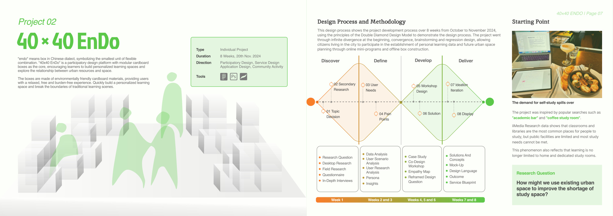
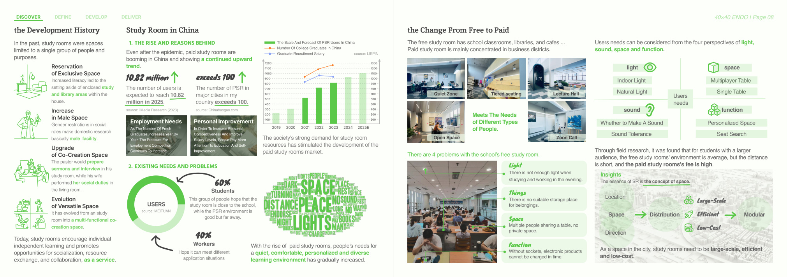
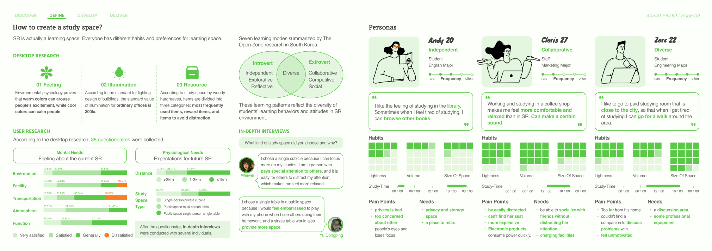
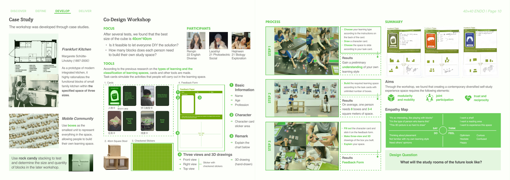
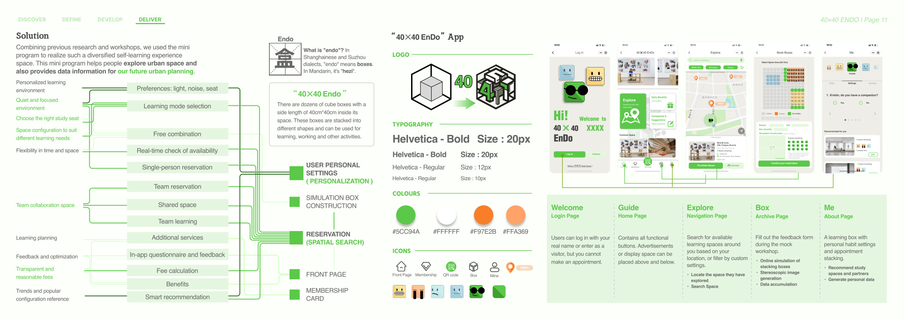

Project problem
Study needs increasingly spill beyond classrooms and libraries, yet existing spaces are often expensive, inflexible, or mismatched to different learning styles, sound tolerance, and storage or charging needs.
Project 02
Participatory Design · Service Design · Application DesignA modular study-space system that turns urban leftovers into flexible learning environments while collecting user insight for future planning.

Overview
This page keeps the same visual language as the home page, but expands the project into a readable case-study structure.
Study needs increasingly spill beyond classrooms and libraries, yet existing spaces are often expensive, inflexible, or mismatched to different learning styles, sound tolerance, and storage or charging needs.
The project uses 40 cm modular cardboard boxes as the smallest spatial unit. Users can simulate, reserve, and build their own space configurations, while the system accumulates preference data for future urban resource planning.
module size chosen after prototyping
average per participant in workshop outputs
digital reservation linked with physical assembly
Project story
The structure below is web-first rather than PDF-first, so each stage of the project can be scanned more easily.
The project starts from the shortage and mismatch of study spaces in cities. Research traces both the rise of paid study rooms and the limitations of free ones, especially in relation to distance, light, privacy, power access, and flexibility.
Questionnaires, interviews, personas, case studies, and a co-design workshop were used to understand learning modes such as independent, collaborative, and diverse patterns. The workshop helped participants build and draw their own study spaces using box modules.
“EnDo” means “box” in local dialect. The concept turns the box into both a spatial building block and a participatory interface. Through booking, simulation, and feedback, the mini program becomes a bridge between individual habits and urban planning data.
The design includes a mini-program flow for location search, box booking, simulation construction, and personal settings. A service blueprint shows how user behaviour, merchant cooperation, backend support, and data feedback work together as a system.
Selected visuals
Click any image to enlarge it.



